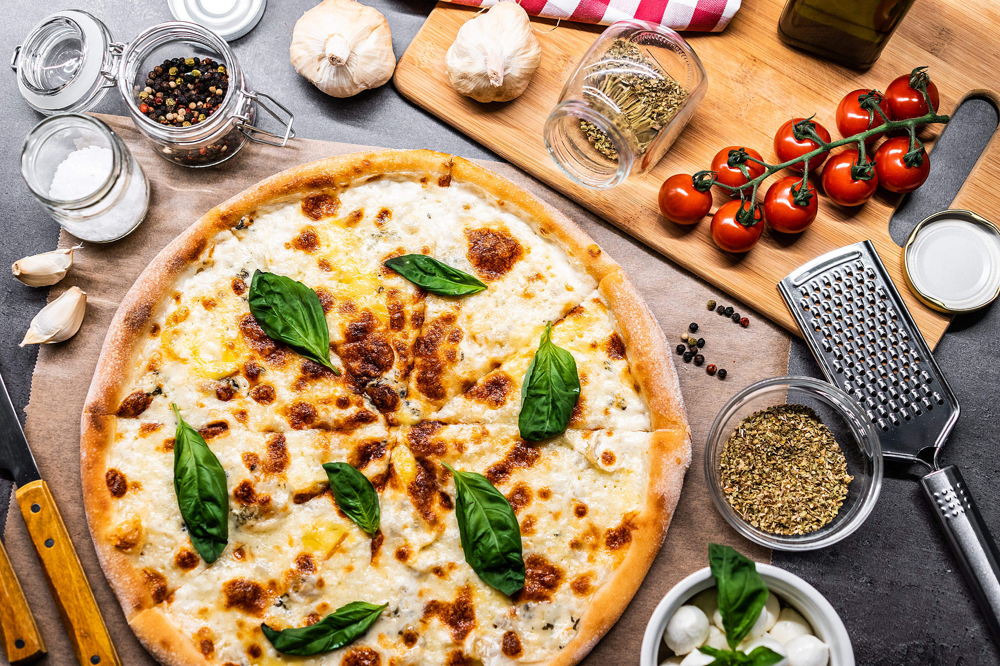

Authentic Quattro Formaggi Pizza.
A symphony of cheeses atop a pizza crust that dances between tradition and indulgence.
Ingredients.
Dough
- 300g (10.6 oz) 0 flour (or Manitoba, or all-purpose flour)
- 170 ml (3/4 cup - 1 tsp) warm water
- 3g (0.1 oz) dry baker's yeast (or 9g/0.3 oz fresh yeast)
- 1 tsp barley malt or honey
- 4 tbsp olive oil
- 7g (0.25 oz) fine salt
Topping
- 1/2 cup water
- 12 ouce Tomato paste
- 1 tsp dried oregano, crushed
- 1 tsp dried basil, crushed
- 50g (1.8 oz) mozzarella, chopped
- 50g (1.8 oz) Gorgonzola, chopped
- 50g (1.8 oz) Grana Padano or Parmiggiano-Reggiano, grated
- black pepper, to taste
Directions.
- Add the flour and the dry baker's yeast to a large bowl — mix them together so they brewer's yeast is evenly dispersed in the flour.
- Meanwhile, dissolve the malt in warm water, add it to the bowl with the flour, together with olive oil and salt.
- Knead by hand until you get a smooth dough.
- Once risen, divide the dough in half, shape each half in a ball, roll them out into discs on a floured surface, then place each in a non-stick tray and let them rise for another hour.
- Once an hour has passed, sprinkle the pizza base with the four cheeses and black pepper.
- Bake in a 250°C/480°F oven, with the grill option turned on, for 15 minutes, until the pizza's edges are golden and its bottom dry.
- Once baked, serve immediately.